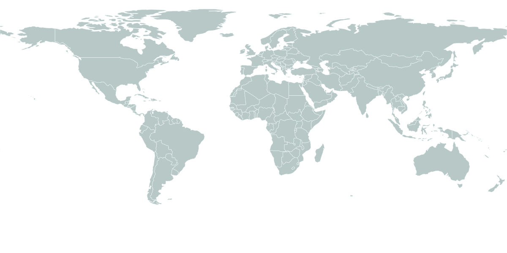

Wearable Sensing & Activity Recognition
Sensor-based human activity recognition with multimodal, multi-channel time-series signals in realistic, long-tailed settings.
Academic Homepage — Zhengzhou, China
滕起
I build efficient neural models that learn from wearable sensor signals — spanning human activity recognition, attention-driven time-series learning, and data-driven dynamical systems.
01Profile
School of Management, Zhengzhou University — Zhengzhou, China
Doctor of Philosophy — Nanjing, China
02Research
The common thread across recent work: extracting trustworthy structure from noisy, multi-channel sensor time series — and doing it with models small enough to matter in practice.
Sensor-based human activity recognition with multimodal, multi-channel time-series signals in realistic, long-tailed settings.
Layer-wise and block-wise training, decoupled and re-parameterized convolutions, and accuracy–speed trade-offs for practical deployment.
Temporal, spatial, channel, and cross-domain attention mechanisms for structured sensor intelligence.
Neural sequence models that approximate and identify nonlinear governing equations directly from data.
03Publications
Representative papers on activity recognition, efficient training, and attention design — ranked by their citation footprint.
No publications match this filter.
04Visitor Atlas
The map lights up an approximate location only when a visitor actively asks to place a dot. Nothing is stored on this page.

Automatic detection
When this page loads, it quietly places an approximate, city-level dot from your IP — no permission prompt, and nothing is stored on this page. Prefer precision? The button upgrades the dot to a browser-approved location.
Detecting an approximate location for this visit…
Want a dot for every visitor, kept over time? A static page cannot store them — embed a free ClustrMaps or PulseMaps widget (see README) and it renders here.
05Links
Loading live publication and citation data…